The Power of Diffusion Models
Using the pre-trained DeepFloyd IF model to implement sampling loops, inpainting, image-to-image translation, visual anagrams, and hybrid images.
Text-to-Image Sampling
Three custom prompts sampled using DeepFloyd stage 1 (64×64) upsampled via stage 2 (256×256). Seed: 100. Tested at num_inference_steps=20 and 5 to compare quality vs. speed.
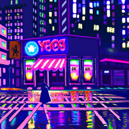
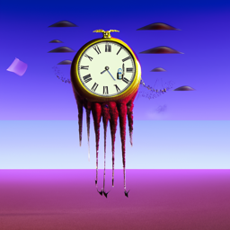
Implementing the Forward Process
Forward process: x_t = √ᾱ_t · x₀ + √(1−ᾱ_t) · ε where ε ∼ N(0, I). As t increases, the signal is progressively overwhelmed by Gaussian noise. Images upsampled to 256×256 via stage 2.

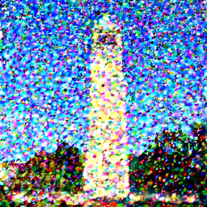
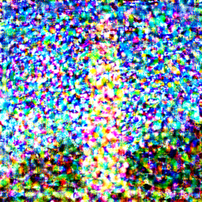
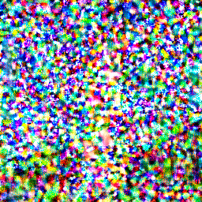
Classical Denoising
Gaussian blur (kernel=5, σ=2) applied to noisy images. Works partially at low noise but fails completely at high noise levels — the blurring smears rather than restores structure. This motivates the learned diffusion approach.
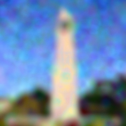
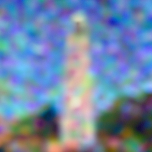
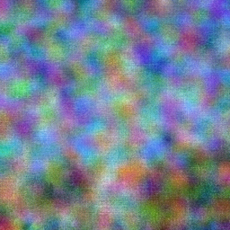
One-Step Denoising
The pretrained UNet predicts noise ε̂ in a single forward pass. Clean estimate: x̂₀ = (x_t − √(1−ᾱ_t)·ε̂) / √ᾱ_t. Results degrade significantly at higher t — too much information has been destroyed for a single step to recover.
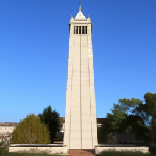
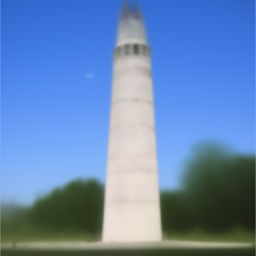
Iterative Denoising
Strided timesteps 990→0 (stride 30, 34 steps total). Starting at i_start=10 (t=690). DDPM update rule: x_t' = (√ᾱ_t'·β_t)/(1−ᾱ_t)·x̂₀ + (√α_t·(1−ᾱ_t'))/(1−ᾱ_t)·x_t + v_σ, where learned variance v_σ is added at each step.
Comparison — iterative vs one-step vs Gaussian
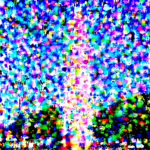
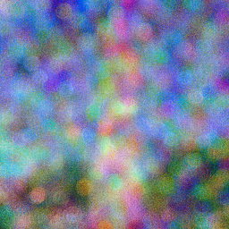
Diffusion Model Sampling
Five images generated from pure Gaussian noise with prompt "a high quality photo", no CFG (γ=1), starting from i_start=0. Quality is limited without guidance — the model explores diverse but often incoherent outputs.
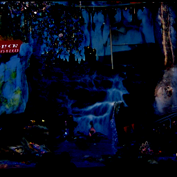
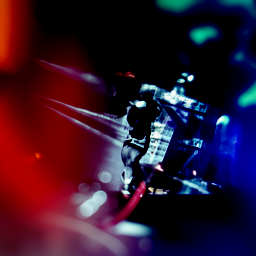
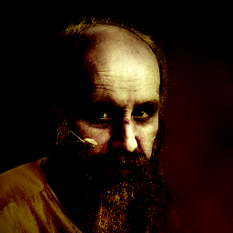
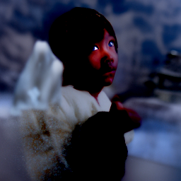
Classifier-Free Guidance (CFG)
CFG formula: ε = εᵤ + γ(εc − εᵤ) with γ=7. Both runs use the same prompt "a high quality photo". CFG dramatically sharpens results by amplifying the direction the conditional score differs from the unconditional one.
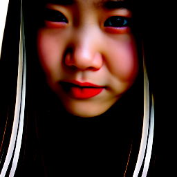
Image-to-Image Translation (SDEdit)
Campanile noised to t = strided_timesteps[i_start], then denoised with CFG (prompt: "a high quality photo"). Lower i_start adds more noise → larger creative edit. Higher i_start adds less noise → output stays closer to the original.
Editing Hand-Drawn and Web Images
SDEdit applied to a web photo and two hand-drawn sketches. The diffusion model projects non-realistic inputs onto the natural image manifold. Higher i_start preserves more of the original structure.
Web Image — Magnolia flowers

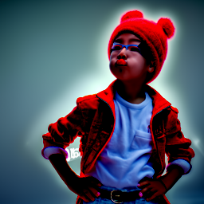
Hand-Drawn Image 1 — Flower sketch
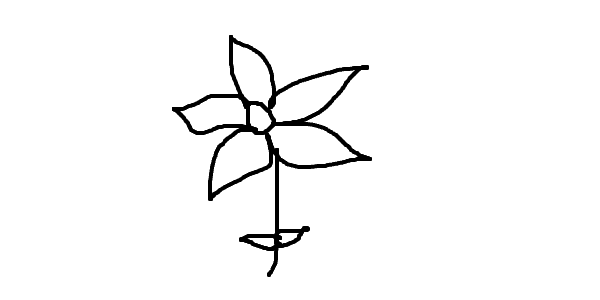
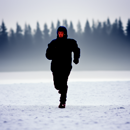
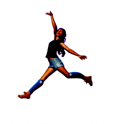
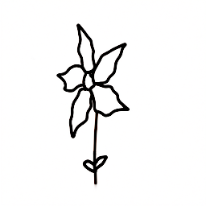
Hand-Drawn Image 2 — Star/figure sketch
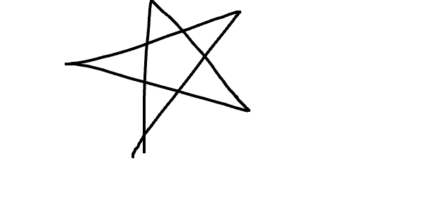
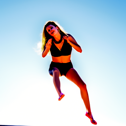
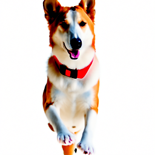
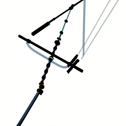
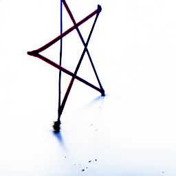
Inpainting
RePaint algorithm: start from pure noise, but at each denoising step force non-masked regions back: x_t ← m·x_t + (1−m)·forward(x_orig, t). Fresh noise is sampled at each timestep to match the correct noise level.
Campanile — top of tower inpainted
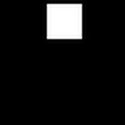
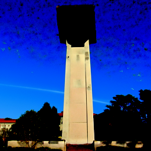
Own image 1 — Magnolia web photo (center masked)
Own image 2 — Hand-drawn flower sketch (bottom half masked)
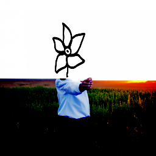
Text-Conditional Image-to-Image Translation
Same SDEdit procedure as 1.7 but guided by a strong descriptive prompt: "a cinematic shot of a futuristic floating city above the ocean at sunset, ultra detailed, 4k, dramatic lighting". The model blends prompt semantics with the structural content of the Campanile. At low i_start, the prompt dominates; at high i_start, the tower structure is preserved.
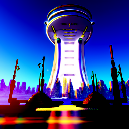
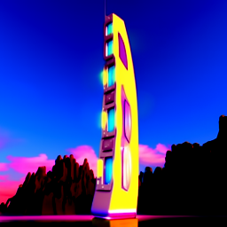
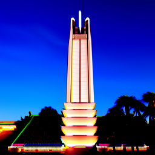
Visual Anagrams
At each denoising step: ε₁ = CFG(x_t, p₁), ε₂ = flip(CFG(flip(x_t), p₂)), ε = (ε₁+ε₂)/2. Averaging forces the image to simultaneously satisfy both prompts — one upright, one when rotated 180°.
Illusion 1 — Old man sketch / 1920s jazz band
"sketch of an old man"
"1920s jazz band"
Illusion 2 — Majestic dragon / Watercolor lakeside cabin
"majestic dragon over mountains"
"watercolor lakeside cabin"
Hybrid Images
Factorized Diffusion: at each step, compute two CFG noise estimates ε₁ (p₁) and ε₂ (p₂), then combine: ε = lowpass(ε₁) + highpass(ε₂) using a Gaussian blur (kernel=33, σ=2) as the lowpass filter. The result contains low-frequency structure from p₁ and high-frequency detail from p₂ — so the perceived subject changes with viewing distance.
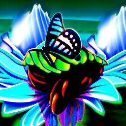
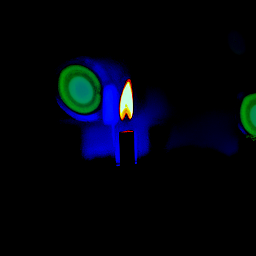